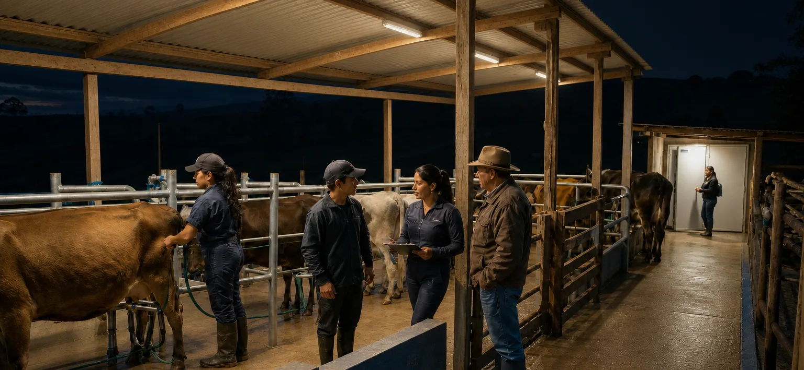

Antes de decidir
Diagnóstico, caracterización, bases técnicas, levantamiento y criterios para orientar la inversión.
Diseño, revisión y verificación
MVH organiza los servicios antes, durante y después de intervenir para evitar compras improvisadas y alcances ambiguos.
Imagen conceptual aprobada · no corresponde a un proyecto real
Tres momentos
Diagnóstico, caracterización, bases técnicas, levantamiento y criterios para orientar la inversión.
Diseño, revisión, especificación y acompañamiento según el alcance aprobado.
Comprobación, hallazgos, pendientes, documentación y trazabilidad.
Capacidades de diseño
MVH estructura el componente luminotécnico y define, antes de contratar, qué disciplinas y competencias deben participar en cada proyecto.
Trabajo, industria, logística, comercio, educación, salud y tareas visuales críticas.
Patios, parqueaderos, grandes áreas, circulación, cargue, fachadas y operación nocturna.
Vías, andenes, ciclorrutas, parques, plazas, veredas, centros poblados y territorios.
Canchas comunitarias, placas polideportivas, coliseos y escenarios profesionales.
Evacuación, antipánico, tareas de alto riesgo, señales, autonomía y continuidad.
Unidades productivas, centros de acopio, plantas, invernaderos, acuicultura y ruralidad.
Muelles, patios, bodegas, pasarelas, terminales y operaciones nocturnas en tierra.
Luz natural, eficiencia, regulación, telegestión, mantenimiento y verificación posterior.
Necesidad visual, fotometría, calidad de luz, criterios de selección, control y evidencia.
Los componentes eléctricos, estructurales, civiles o sectoriales son asumidos por profesionales habilitados.
Túneles, áreas clasificadas, aeródromos, hospitales y deporte profesional exigen validación específica.
La formación en iluminación sustenta el componente técnico. La firma de declaraciones reglamentarias, cuando aplique, se define según matrícula, competencia, experiencia y alcance legal verificable.
De la especificación a la evidencia
Comparar luminarias exige relacionar fotometría, óptica, ambiente, control y mantenimiento.

La verificación documenta condiciones y hallazgos sin anticipar certificaciones o dictámenes.
Imágenes editoriales conceptuales. Representan aplicaciones posibles y no evidencia de proyectos ejecutados por MVH.
Alcances diferenciados
La propuesta debe identificar con precisión qué etapa asume MVH, qué información entrega el cliente, qué disciplinas participan, cómo se revisa y qué evidencia cierra el servicio.
Siguiente paso
Una orientación inicial ayuda a identificar la información necesaria y el servicio pertinente.